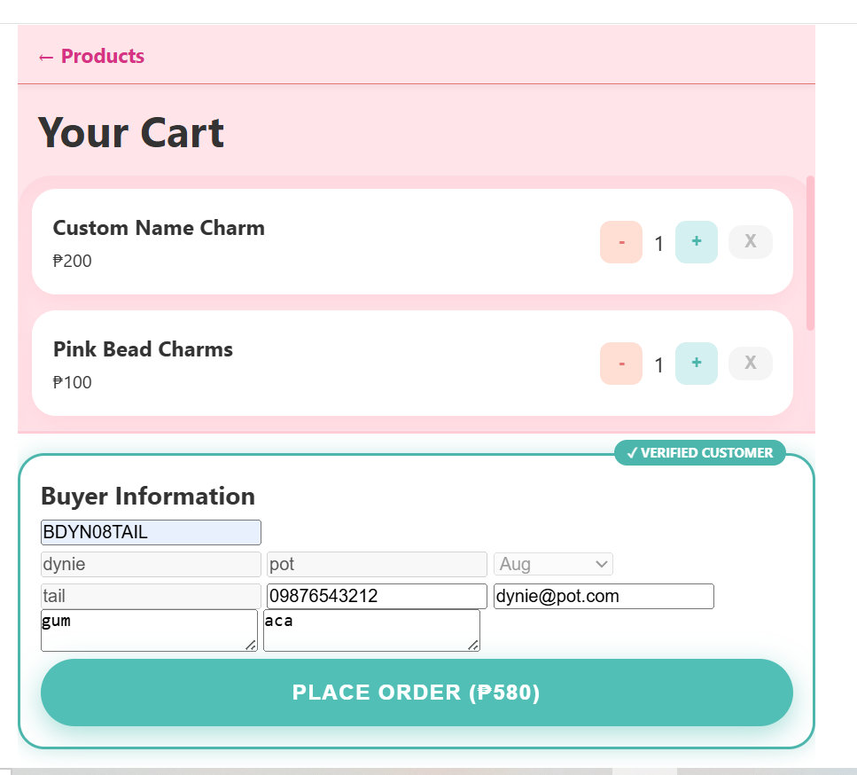
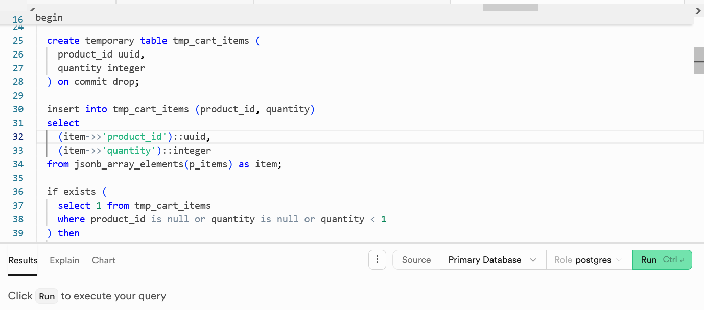
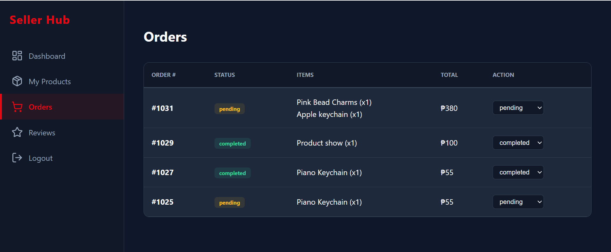
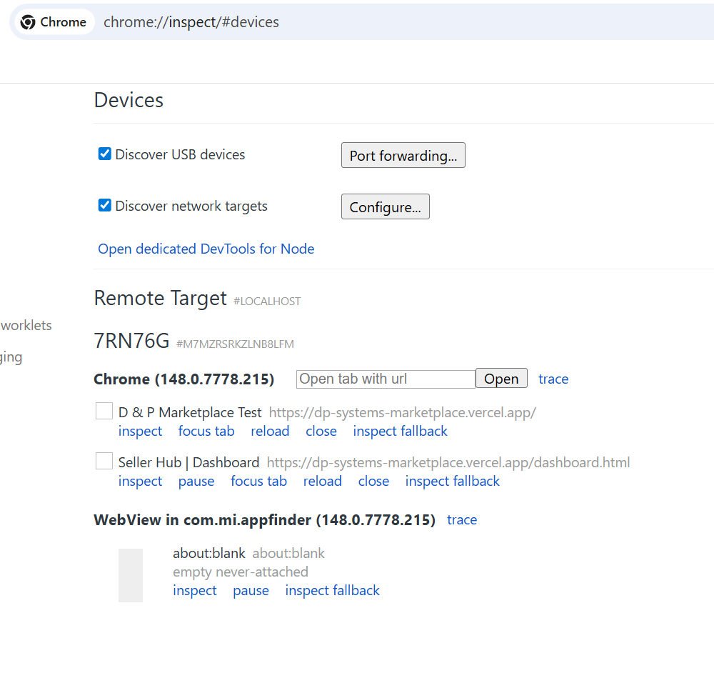
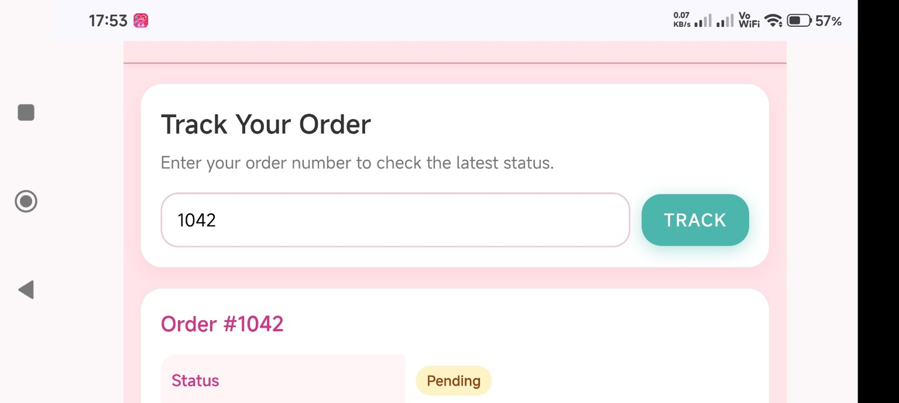
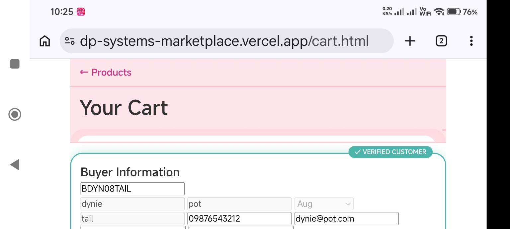
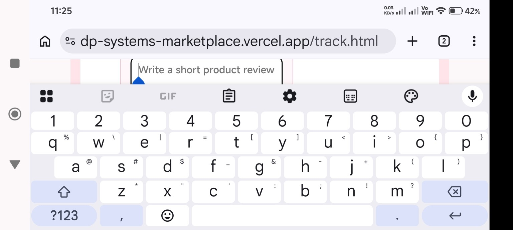
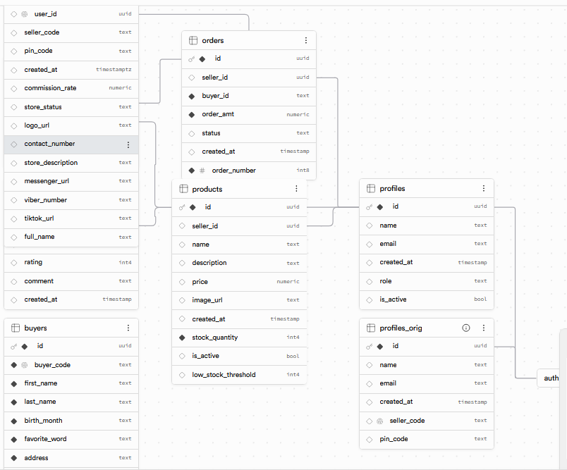
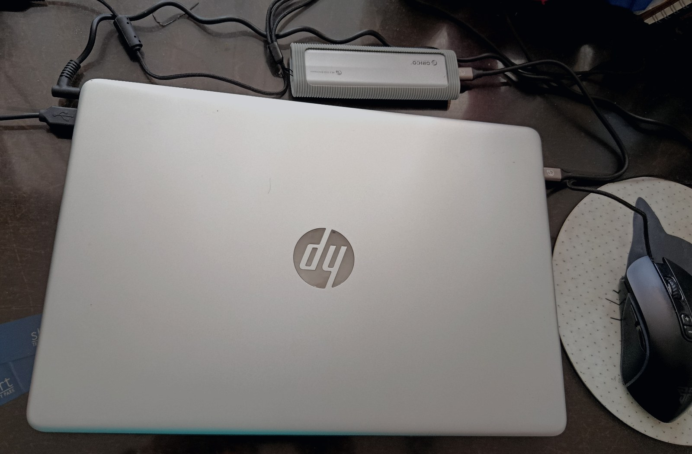

Systems thinking before coding
I map how buyers, sellers, admins, products, orders, and database records connect before turning them into screens and queries.
Lucena City, Quezon
I help small businesses turn manual workflows into Supabase-backed dashboards, marketplaces, and internal tools using HTML, CSS, vanilla JavaScript, PostgreSQL, and practical deployment workflows.
Why my background matters
My current Supabase work is built on a previous 10+ year career in systems analysis, programming, application support, and business software workflows. That background helps me approach web apps as complete systems: users, records, permissions, reports, status changes, data validation, and edge cases.
I map how buyers, sellers, admins, products, orders, and database records connect before turning them into screens and queries.
I turn manual processes into tables, validation rules, form behavior, dashboard actions, and reliable Supabase data flow.
Application support experience trained me to trace wrong IDs, failed queries, broken forms, permission errors, and production setup issues carefully.
Services Offered
Best fit for local entrepreneurs, small shops, portfolio builders, and lightweight business systems that need a reliable backend without the overhead of heavy frontend frameworks.
Project setup, table design, relationships, storage buckets, auth flows, and clean client-side integration.
Row-level security planning for buyers, sellers, admins, private records, and role-based workflows.
Local/cloud workflow checks, migration readiness, environment variables, deployment notes, and troubleshooting.
API calls, auth state, cart logic, dashboards, form validation, and DOM-based UI updates without packaged frameworks.
Seller onboarding, product CRUD, order tracking, stock checks, and buyer-side checkout logic.
Console-based debugging, stable error handling, rollback planning, and production-readiness cleanup.
Additional Capabilities
In addition to Supabase backend and dashboard work, D & P Systems can help early-stage clients test ideas faster through quick app prototypes and coordinated creative production support.
Cross-platform mobile/desktop app prototypes connected to a real Supabase backend for testing app ideas, workflows, dashboards, and proof-of-concept business tools.
Creative services are coordinated through trusted strategic collaborators, allowing D & P Systems to support early-stage projects that need both working systems and presentation-ready visual assets.
Logo concepts, basic brand visuals, social media graphics, and presentation-ready design assets are supported through trusted strategic collaborators when a project needs both technical implementation and visual polish.
Working Prototype / Portfolio Case Study
This project started from layout fundamentals and grew into a database-backed marketplace prototype. The goal was not to hide complexity behind packaged frameworks, but to understand the full path from screen behavior to Supabase data: auth, profiles, product records, seller ownership, checkout flow, order tracking, and production cleanup.
Small sellers need a lightweight way to manage products, inventory, orders, buyer records, and customer contact options without depending on a heavy custom platform.
Built a Supabase-backed marketplace with seller onboarding, product CRUD, buyer checkout, seller-based order grouping, and order tracking screens.
Designed and connected profiles, products, buyers, orders, order items, storage, auth behavior, stock fields, and access-control planning.
Used HTML, CSS, vanilla JavaScript, ES modules, DOM rendering, cart state, form validation, product overlays, and dashboard actions.
Project Preview
A quick visual preview of the buyer checkout flow, backend proof, and seller order management workflow. The full breakdown is available in the case study.



Real-Device QA & DevTools
The marketplace was tested on a real Android phone instead of relying only on desktop resizing. The test path included portrait and landscape checks, keyboard behavior, checkout redirects, Android Back navigation, seller dashboard section history, and external contact deep links.

chrome://inspect with USB debugging to inspect
live Android Chrome tabs, focus mobile pages, monitor console behavior, and
validate marketplace flows on a real phone.



Checkout success, track page Back to Shop, empty-cart return, and Seller Hub internal views were cleaned up with replace(), pushState(), and popstate handling to avoid Android Back loops.
Buyer cart, tracking, and review screens were tested in landscape with the mobile keyboard open, then adjusted for natural scrolling instead of fragile height locks.
Call/Text, Messenger, and TikTok links were confirmed on device. Viber direct chat was captured during onboarding but hidden from the buyer UI after real-device and desktop tests proved unreliable.
Database Proof
The marketplace project moved beyond static landing pages into actual schema design: sellers, buyers, products, orders, status fields, inventory values, and contact/social data for customer workflows.

Products belong to sellers, orders connect buyers and sellers, and seller profile fields support buyer contact workflows.
Stock quantity, active status, order amount, and checkout validation are treated as backend workflow concerns, not just UI labels.
The schema creates a base for RLS rules, seller ownership checks, and safer role-based data access.
Real Workspace
The original desk photo is kept as an authentic supporting image, but improved with a tighter crop, darker grade, and cleaner portfolio treatment.

What I Can Fix For Clients
This section is aimed at small businesses, local sellers, and project owners who already have a website or prototype but need the system behavior to actually work reliably.
Fix auth state problems, missing profile records, seller onboarding issues, and pages that fail after login.
Review table structure, relationships, foreign keys, naming, and whether the database matches the actual business workflow.
Plan Supabase RLS rules so buyers, sellers, and admins only see or modify the records they should control.
Improve stock checks, cart validation, order creation, seller-based order grouping, and checkout failure handling.
Debug Supabase insert/update errors, validation gaps, wrong input selectors, missing required fields, and silent JavaScript failures.
Check environment variables, Supabase project links, local/cloud differences, CLI workflow issues, and production cleanup tasks.
Project Review
Send me your current workflow, screenshots, database tables, or error logs. I can review the weak points and help turn the prototype into a cleaner, safer, production-ready system. This is a good fit for seller dashboards, inventory tools, marketplace prototypes, internal admin panels, and Supabase debugging work.
Contact
Describe what you are trying to build, what currently fails, and what you need fixed first. Screenshots, database table notes, and console errors are welcome.